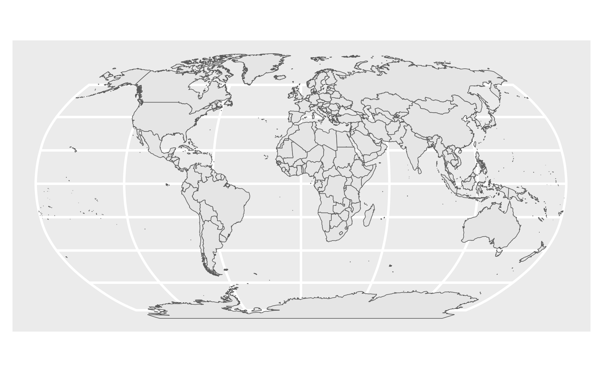

library(maps)
us_counties <- st_as_sf(
map("county", plot = FALSE, fill = TRUE))
ggplot(data = us_counties) +
geom_sf(fill = 'grey90', color = 'grey60')12 Maps
12.1 How to Make a Map
12.1.1 The maps package
Includes data on:
- World: world, world.cities, lakes
- US: states, county, state, usa
- France: france
- Italy: italy
- New zealand: nz
Example:
12.1.2 Step 1: Load a shape file
This can be done through two ways:
a. Use a library
b. Read in a shape file
12.1.3 Step 2: Plot the shape file
We shall discuss how to plot the following data types with their corresponding functions as seen below:
a. Polygon data: geom_polygon()
b. Simple Features data: geom_sf()
12.1.3.1 Polygon maps
Generally, polygon maps are plotted with two steps.
Example: Plotting the World
- Get the “World” shape file
library(ggplot2)
world <- map_data("world")
head(world)#> long lat group order region subregion
#> 1 -69.89912 12.45200 1 1 Aruba <NA>
#> 2 -69.89571 12.42300 1 2 Aruba <NA>
#> 3 -69.94219 12.43853 1 3 Aruba <NA>
#> 4 -70.00415 12.50049 1 4 Aruba <NA>
#> 5 -70.06612 12.54697 1 5 Aruba <NA>
#> 6 -70.05088 12.59707 1 6 Aruba <NA>- Make the plot with
geom_polygon()
ggplot(world) +
geom_polygon(
aes(x = long, y = lat, group = group),
fill = "grey90", color = "grey60"
)Example: Plotting the USA
- Get the “US States” shape file
library(ggplot2)
us_states <- map_data("state")- Make the plot with
geom_polygon()
ggplot(us_states) +
geom_polygon(
aes(x = long, y = lat, group = group),
fill = "grey90", color = "grey60"
)12.1.3.2 Simple Features (sf) maps
Simple Features package: {sf}

To show an example of a simple features map, we shall use the library data from Natural Earth
world <- ne_countries(
scale = "medium",
returnclass = "sf"
)
world %>%
select(name, geometry) %>%
head()world <- ne_countries(
scale = "medium",
returnclass = "sf"
)
world %>%
select(name, geometry) %>%
head()Once again, we use two steps to plot our maps.
Example: Plotting the World
- Get the “World” shape file
world <- ne_countries(
scale = "medium",
returnclass = "sf"
)- Make the plot with
geom_sf()
library(sf)
ggplot(data = world) +
geom_sf(fill = "grey90", color = "grey60")Example: Plotting the USA
- Get the “US States” shape file
us_states <- ne_states(
country = 'united states of america',
returnclass = 'sf'
)- Make the plot with
geom_sf()
library(sf)
ggplot(data = us_states) +
geom_sf(fill = "grey90", color = "grey60")Example: Plotting the USA (again, but better)
- Get the Continental “US States” shape file
us_states_cont <- ne_states(
country = 'united states of america',
returnclass = 'sf'
) %>%
filter(! name %in% c('Alaska', 'Hawaii'))- Make the plot with
geom_sf()
library(sf)
ggplot(data = us_states_cont) +
geom_sf(fill = "grey90", color = "grey60")Example: Plotting the USA (with Hawaii and Alaska)
To inset Hawaii and Alaska…
1. Get the shape file from {tigris} package
library(tigris)
us_sf <- tigris::states(class = "sf", cb = TRUE) %>%
shift_geometry() %>%
filter(GEOID < 60)- Make the plot with
geom_sf()
us_sf %>%
ggplot() +
geom_sf()12.1.3.3 Simple Features (sf) maps: st_read()
Example: Plotting the World
- This time, use
st_read()to read in the “World” shape file from Natural Earth
library(sf)
world <- st_read(here::here(
'data', 'natural_earth_countries',
'ne_50m_admin_0_countries.shp')) %>%
clean_names()- Then, all you need to do is use ggplot
ggplot(data = world) +
geom_sf(fill = "grey90", color = "grey60")Example: Plotting Central Park
- Read in the “Central Park” shape file [source]
library(sf)
central_park <- st_read(here::here(
'data', 'central_park', 'CentralPark.shp'))ggplot(data = central_park) +
geom_sf(color = 'grey75')12.2 Adding Data to Maps
12.2.0.1 First rule of adding data to maps:
12.2.0.2 Do you need to make a map?
Not all maps are useful…

[https://xkcd.com/1138/]
…but some maps are
There are two ways to map data:
- Choropleth maps
- Point maps
12.2.1 Chloropleth Maps
The word choropleth comes from Greek:
- χῶρος “choros” (area/region)
- πλῆθος “plethos” (multitude)
An example of a chloropleth map:
Choropleth maps are easily misleading
Number of events != Number of events per capita

Manipulating fill scale produces wildly different maps, such as this:
Versus this:
Below are some maps that show how land doesn’t vote - people vote

Election maps from: http://www-personal.umich.edu/~mejn/election/2016/

Chloropleth maps are also easy to use to lie with fake news
Bottom map is actually this map of the 2012 election
{kind=link}
(here is what actual crime rates look like)
2016 Election map [source]
2014 Crime map [source]
A choropleth alternative: hex maps
1994 Simpson Diversity Index in US Schools
https://github.com/malcolmbarrett/designing_ggplots
2016 Electoral College

12.2.1.1 How to make a choropleth map
Get the “fill” data
milk_2017 <- milk_production %>%
filter(year == 2017) %>%
select(name = state, milk_produced) %>%
mutate(milk_produced = milk_produced / 10^9)Get the “map” data
us_states <- ne_states(
country = 'united states of america',
returnclass = 'sf') %>%
filter(! name %in% c('Alaska', 'Hawaii')) %>%
left_join(milk_2017, by = 'name')Plot the map
ggplot(us_states) +
geom_sf(aes(fill = milk_produced)) +
scale_fill_viridis(
option = "plasma",
limits = c(0, 40)) +
theme_void(base_size = 15) +
theme(legend.position = 'bottom') +
labs(
fill = 'Milk produced\n(billions lbs)',
title = 'Milk Production by State in 2017'
)Non-linear scale:
ggplot(us_states) +
geom_sf(aes(fill = milk_produced)) +
scale_fill_viridis(
trans = 'sqrt',
option = "plasma",
limits = c(0, 40)) +
theme_void(base_size = 15) +
theme(legend.position = 'bottom') +
labs(
fill = 'Milk produced\n(billions lbs)',
title = 'Milk Production by State in 2017'
)12.2.2 Point Maps
Point maps can be made with…
Points as locations:
Points encoding a variable
For point size, use area, not radius
\(Area = \pi r^2\)
Using radius:
Using area:
12.2.2.1 How to add points to a map
Load the continental US shape file
us_states_cont <- ne_states(
country = 'united states of america',
returnclass = 'sf') %>%
filter(! name %in% c('Alaska', 'Hawaii'))Read in the coffee shop data
us_coffee_shops <- read_csv(here::here('data', 'us_coffee_shops.csv'))
# Only keep data in continental US
us_coffee_shops <- us_coffee_shops %>%
filter(
lat > 22, lat < 50,
long > -150, long < -66
)head(us_coffee_shops)#> # A tibble: 6 × 8
#> name lat long unique_id city state_abb zip state
#> <chr> <dbl> <dbl> <dbl> <chr> <chr> <chr> <chr>
#> 1 Baskin Robbins 40.8 -73.4 3304448 Huntington Stat… NY 11746 New …
#> 2 Baskin Robbins 42.1 -88.0 11342048 Rolling Meadows IL 60008 Illi…
#> 3 Baskin Robbins 34.0 -84.5 3304169 Marietta GA 30066 Geor…
#> 4 Baskin Robbins 29.8 -95.6 3304006 Houston TX 77079 Texas
#> 5 Baskin Robbins 36.4 -89.5 3303959 Tiptonville TN 38079 Tenn…
#> 6 Baskin Robbins 40.7 -73.6 3304507 Merrick NY 11566 New …Plot coffee shop locations over map
ggplot() +
geom_sf(data = us_states_cont) +
geom_point(
data = us_coffee_shops,
aes(x = long, y = lat, color = name),
size = 0.3
) +
theme_void(base_size = 15) +
theme(legend.position = 'bottom') +
guides(color = guide_legend(
# Move legend title to top
title.position = "top",
# Increase legend point size
override.aes = list(size = 3))) +
labs(
color = 'Coffee shop',
title = 'Coffee Shops in the US'
)Just for fun:
12.3 Projections
What’s a map projection?
Watch this video to learn more:
What is the best projection?…it depends
12.3.1 Using projections
To modify the projection of a map, use coord_sf(crs = st_crs(XXXX))
world <- ne_countries(scale = "medium", returnclass = "sf")ggplot(data = world) +
geom_sf()Default (long-lat)
ggplot(data = world) +
geom_sf()Robinson projection
ggplot(data = world) +
geom_sf() +
coord_sf(crs = "ESRI:54030")
Mollweide projection
ggplot(data = world) +
geom_sf() +
coord_sf(crs = "ESRI:54009")12.3.2 Common Projections
ggplot layer:
coord_sf(crs = "ESRI:XXXX")World
| Code | Projection |
|---|---|
"ESRI:54030" |
Robinson |
"ESRI:54002" |
Equidistant cylindrical |
"ESRI:54004" |
Mercator |
"ESRI:54008" |
Sinusoidal |
"ESRI:54009" |
Mollweide |
United States
| Code | Projection |
|---|---|
"ESRI:102003" |
Albers |
"ESRI:102004" |
Lambert Conformal Conic |
4269 |
NAD 83 |
12.3.3 US projections
us_states_cont <- ne_states(country = 'united states of america',
returnclass = 'sf') %>%
filter(! name %in% c('Alaska', 'Hawaii'))NAD 83 projection
ggplot(data = world) +
geom_sf() +
coord_sf(crs = 4269)
Mercator
ggplot(data = world) +
geom_sf() +
coord_sf(crs = "ESRI:54004")Albers
ggplot(data = us_states_cont) +
geom_sf() +
coord_sf(crs = "ESRI:102003")12.3.4 Mapping data to projections - choropleth map
milk_2017 <- milk_production %>%
filter(year == 2017) %>%
select(name = state, milk_produced) %>%
mutate(milk_produced = milk_produced / 10^9)
us_states <- ne_states(
country = 'united states of america',
returnclass = 'sf') %>%
filter(! name %in% c('Alaska', 'Hawaii')) %>%
left_join(milk_2017, by = 'name')
ggplot(us_states) +
geom_sf(aes(fill = milk_produced)) +
scale_fill_viridis(
option = "plasma",
limits = c(0, 40)) +
theme_void(base_size = 15) +
theme(legend.position = 'bottom') +
labs(
fill = 'Milk produced\n(billions lbs)',
title = 'Milk Production by State in 2017'
)Albers Projection:
milk_2017 <- milk_production %>%
filter(year == 2017) %>%
select(name = state, milk_produced) %>%
mutate(milk_produced = milk_produced / 10^9)
us_states <- ne_states(
country = 'united states of america',
returnclass = 'sf') %>%
filter(! name %in% c('Alaska', 'Hawaii')) %>%
left_join(milk_2017, by = 'name')
ggplot(us_states) +
geom_sf(aes(fill = milk_produced)) +
scale_fill_viridis(
option = "plasma",
limits = c(0, 40)) +
theme_void(base_size = 15) +
theme(legend.position = 'bottom') +
labs(
fill = 'Milk produced\n(billions lbs)',
title = 'Milk Production by State in 2017'
) +
coord_sf(crs = "ESRI:102003")12.3.5 Mapping data to projections - points
us_states_cont <- ne_states(
country = 'united states of america',
returnclass = 'sf') %>%
filter(! name %in% c('Alaska', 'Hawaii'))
us_coffee_shops <- us_coffee_shops %>%
filter(lat > 22, lat < 50,
long > -150, long < -66)
ggplot() +
geom_sf(data = us_states_cont) +
geom_point(
data = us_coffee_shops,
aes(x = long, y = lat, color = name),
size = 0.3) +
theme_void(base_size = 15) +
theme(legend.position = 'bottom') +
guides(color = guide_legend(
# Move legend title to top
title.position = "top",
# Increase legend point size
override.aes = list(size = 3))) +
labs(
color = 'Coffee shop',
title = 'Coffee Shops in the US'
)us_states_cont <- ne_states(
country = 'united states of america',
returnclass = 'sf') %>%
filter(! name %in% c('Alaska', 'Hawaii'))
us_coffee_shops <- us_coffee_shops %>%
filter(lat > 22, lat < 50,
long > -150, long < -66)
ggplot() +
geom_sf(data = us_states_cont) +
geom_point(
data = us_coffee_shops,
aes(x = long, y = lat, color = name),
size = 0.3) +
theme_void(base_size = 15) +
theme(legend.position = 'bottom') +
guides(color = guide_legend(
# Move legend title to top
title.position = "top",
# Increase legend point size
override.aes = list(size = 3))) +
labs(
color = 'Coffee shop',
title = 'Coffee Shops in the US'
) +
coord_sf(crs = "ESRI:102003")Fail!
First match us_coffee_shops crs to us_states_cont
us_states_cont <- ne_states(
country = 'united states of america',
returnclass = 'sf') %>%
filter(! name %in% c('Alaska', 'Hawaii'))
us_coffee_shops <- us_coffee_shops %>%
filter(lat > 22, lat < 50,
long > -150, long < -66)
us_coffee_shops_sf <- st_as_sf(us_coffee_shops,
coords = c("long", "lat"),
crs = st_crs(us_states_cont))Plot coffee shop locations over map with geom_sf()
ggplot() +
geom_sf(data = us_states_cont) +
geom_sf(
data = us_coffee_shops_sf,
aes(color = name),
size = 0.3) +
theme_void(base_size = 15) +
theme(legend.position = 'bottom') +
guides(color = guide_legend(
# Move legend title to top
title.position = "top",
# Increase legend point size
override.aes = list(size = 3))) +
labs(
fill = 'Coffee shop',
title = 'Coffee Shops in the US'
)Albers Projection:
ggplot() +
geom_sf(data = us_states_cont) +
geom_sf(
data = us_coffee_shops_sf,
aes(color = name),
size = 0.3) +
theme_void(base_size = 15) +
theme(legend.position = 'bottom') +
guides(color = guide_legend(
# Move legend title to top
title.position = "top",
# Increase legend point size
override.aes = list(size = 3))) +
labs(
fill = 'Coffee shop',
title = 'Coffee Shops in the US'
) +
coord_sf(crs = "ESRI:102003")LCC Projection:
ggplot() +
geom_sf(data = us_states_cont) +
geom_sf(
data = us_coffee_shops_sf,
aes(color = name),
size = 0.3) +
theme_void(base_size = 15) +
theme(legend.position = 'bottom') +
guides(color = guide_legend(
# Move legend title to top
title.position = "top",
# Increase legend point size
override.aes = list(size = 3))) +
labs(
fill = 'Coffee shop',
title = 'Coffee Shops in the US'
) +
coord_sf(crs = "ESRI:102004")